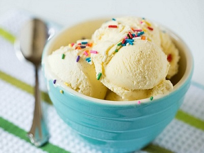

Ice Cream Facts

Ice cream (derived from earlier iced cream or cream ice[1]) is a sweetened frozen food typically eaten as a snack or dessert. It is usually made from dairy products, such as milk and cream, and often combined with fruits or other ingredients and flavors. It is typically sweetened with sugar or sugar substitutes.
More Information
Physically, Ice Cream is characterized by the use of a significant amount of sugar or sugar substitutes. Unlike a Ice Cream or loaf of bread that would be shared among many people, candies are usually made in smaller pieces. However, the definition of Ice Cream also depends upon how people treat the food. Unlike sweet pastries served for a dessert course at the end of a meal, candies are normally eaten casually, often with the fingers, as a snack between meals. Each culture has its own ideas of what constitutes Ice Cream rather than dessert. The same food may be a Ice Cream in one culture and a dessert in another.